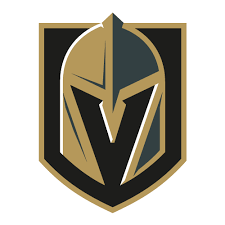

Los Vegas Golden Knights (en español, Caballeros Dorados de Vegas) son un equipo profesional de hockey sobre hielo de los Estados Unidos con sede en el área metropolitana de Las Vegas, Nevada. Compiten en la División Pacífico de la Conferencia Oeste de la National Hockey League (NHL) y disputan sus partidos como locales en T-Mobile Arena, ubicado en el suburbio de Paradise. El equipo fue fundado en 2017 y se convirtió en la primera franquicia de las cuatro grandes ligas profesionales norteamericanas en establecerse en Las Vegas. A lo largo de su historia, los Golden Knights han ganado un total de un título de conferencia y dos títulos de división. La NHL tenía una presencia en Las Vegas desde el año 1991, cuando hubo un partido de exhibición entre los New York Rangers y Los Angeles Kings a una playa de estacionamiento del casino Caesars Palace. Desde entonces, la NHL tenía eventos en Las Vegas, incluye un partido de exhibición anual entre Los Angeles Kings y el Colorado Avalanche y la presentación de los premios individuales de la liga. En el año 2009, hubo un plan que involucró una venta de los Phoenix Coyotes a Jerry Bruckheimer, quien tendría reubicado ese equipo a Las Vegas.

Rumores sobre un equipo de expansión en Las Vegas resurgió en el agosto de 2014, cuando empezaron los trabajos de construcción del T-Mobile Arena; esos rumores fueron anulados por la NHL.345 Sin embargo, en noviembre del mismo año, hubo un rumor que el multimillonario Bill Foley y la familia Maloof (los antiguos propietarios de los Sacramento Kings de la NBA) lideraban el grupo de propietarios para un equipo de expansión en Las Vegas.67 Al mes siguiente, el consejo de gobernadores de la NHL permitió Foley para iniciar una unidad de boletos de temporada, que comenzó en el febrero de 2015; la meta de 10.000 depósitos de boletos de temporada fue logrado en abril del mismo año.89 En el verano de 2015 la liga comenzó el proceso para que los propietarios prospectivos hagan ofertas en los equipos de expansión. Hay dos aplicaciones fue realizado: una aplicación de Bill Foley por un equipo en Las Vegas, y una aplicación de Quebecor por un equipo en la Ciudad de Quebec, que tuvo un equipo que reubicó a Denver después la temporada 1994–95 de la NHL. Ambas de estas ciudades avanzaron a la segunda fase del proceso de expansión,10pero la oferta por un equipo en Quebec fue diferido.
A la conferencia de los propietarios de la liga en el 22 de junio de 2016, la aplicación por un equipo de expansión de Las Vegas fue aprobado unánimemente; el equipo comenzaría a jugar en la temporada 2017–18 de la NHL. 11 El equipo convirtió el primer equipo de los deportes profesionales de las Grandes Ligas para tiene una sede en Las Vegas. En el 22 de noviembre de 2016, el nombre del equipo fue revelado como las Vegas Golden Knights. En el 1 de marzo de 2017, los Golden Knights completó el pago de la cuota de expansión y comenzó las operaciones formales, incluyendo la adquisición de jugadores. En el 21 de junio del mismo año, hubo un borrador de expansión a T-Mobile Arena; el equipo seleccionó 30 jugadores como los otros equipos de la NHL, incluyendo Marc-André Fleury (un portero de los Pittsburgh Penguins) y James Neal (un delantero de los Nashville Predators).En el 6 del octubre de 2017, los Golden Knights jugó su primer partido en Dallas contra los Dallas Stars; James Neal anotó los dos primeros goles por el equipo de camino a su primera victoria. Cuatro días después, el equipo jugó en su primer partido de local contra los Arizona Coyotes; antes de este partido, hubo ceremonias honoríficas a las víctimas del tiroteo de Las Vegas de 2017. Con una victoria por el puntaje final de 5–2 contra los Coyotes, los Golden Knights fue el primer equipo en ganar sus primeras tres partidos en su primera temporada de la NHL;131415el equipo ganó seis de sus primeros siete partidos.

En el 1 de febrero de 2018, el equipo tuvo su 34.ª victoria en sus primeros 50 partidos de su primera temporada; los Golden Knights rompió un récord de la mayor cantidad de victorias por un equipo de expansión en su primera temporada en la liga. Poco después, el equipo rompió el récord de la mayor cantidad de puntos por un equipo de expansión con un gran total de 84 puntos en el fin de febrero. Un mes más, los Golden Knights se convirtió en el primer equipo para hacerse un lugar en la postemporada en su primera temporada en la NHL ya que los Edmonton Oilers y Hartford Whalers entraron la postemporada en la temporada 1979–80 (estos equipos fueron en sus octavas temporadas en ese tiempo); el equipo ganó su primer título de división en 31 de marzo de 2018, después fueron los liderados de este división desde el 23 de diciembre del año pasado. En el 11 de abril de 2018, los Golden Knights ganaron su primer partido de la primera ronda de la postemporada por un puntaje de 1–0 en contra de Los Angeles Kings; el equipo ganó su primera serie de postemporada seis días después cuando ganaron cuatro partidos consecutivos contra de los Kings y se convirtió en el primer equipo para ganar una serie de la postemporada sin una pérdida en su primera temporada en la liga. El oponente de los Golden Knights en la segunda ronda de la postemporada fue los San Jose Sharks; el equipo ganó los primer y tercer partidos en la serie de la segunda ronda pero perdió los segundo y cuarto partidos, que resultó en una empata de 2–2 después de cuatro partidos. Los próximos dos partidos en la serie fueron ganados por los Golden Knights, que ganó su segunda serie de postemporada con los Sharks en seis partidos para avanzar a las finales de la Conferencia Oeste; esta era la tercera vez en la historia de la NHL que un equipo ganó dos o más series de la postemporada en su primera temporada de la liga. En el 20 de mayo de 2018, los Golden Knights ganó su serie de las finales de conferencia con los Winnipeg Jets en cinco partidos (el equipo ganó cuatro partidos consecutivos después perdió el primer partido del serie), y se convirtió en el tercer equipo de expansión de la NHL para avanzar a la final de la Copa Stanley en su primera temporada, después los Toronto Arenas (en 1918) y los Saint Louis Blues (en 1968). Sin embargo, los Golden Knights perdieron la final de la Copa Stanley ante los Washington Capitals en cinco partidos; el equipo ganó el primer partido de la serie pero entonces perdió cuatro partidos consecutivos. A pesar de esto, el equipo rompió el récord de más victorias por un equipo en su primera aparición en la postemporada con una total de 13 victorias.